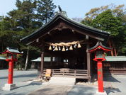
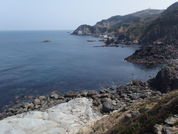
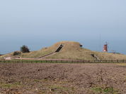
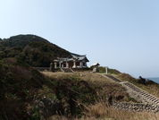

I visited Oshima in Munakata with my wife.
It was warm in those days. That day was fine too, although no rain added to PM2.5 and disturbed air to look at the distance.
Oshima is a historical small island and is registered as one of World Heritages. One of three daughters of Amaterasu lives in this Oshima as a god.

First we took the ferry to Oshima from Konominato in Munakata at 9:25. About 25 minutes cruising commanded a good view of around sea and shore. At 9:50 we got off the ship with some people looking tourists and some people being fishing style. As soon as we got the land we rented two electric assist bicycle and started sightseeing.
We visited Munakata-Taisha Nakatsumiya as the main of this trip.
Second daughter is worshiped to be safe in the sea as a sea god. It stands on the hill being close to the sea. It is a small but fine shrine with the long stone stairs which goes for down to the sea straight like those of Miyajidake shrine.


Then, pedaling the bicycle we got to a lighthouse at about 11:40. This way was rather hard because we sometimes got long and steep slopes. Both Miura Cave, hidden Kirishitans, and Horse's Hoof Rock, a queer figure rock, are each ten minutes walk, one-way, from the lighthouse. Next we visited Windmill and Fort mark as spots with panoramic view. Grass area, good wind and beautiful sea made these spots fantastic. We took a rest and relaxed in fresh air.

At 13:00 we arrived at Okitsu Haruka Miya worship spot
"Okitsumiya can't do daily worship also is an island of a woman prohibition because there is Genkai-nada in the midst. Therefore it was provided as the place Haruka easily sees beyond a sea. It's possible to be dispelled well and wish for Okinoshima in the day when air was clear."
Unfortunately, that day air was not clear so that we couldn't see Oinoshima at all. This is a very small shrine like a miniature, but it is filled with a kind of solemn atmosphere.
We had late lunch at Kaihoumaru restaurant. Many and various sea weed were used for several small plates called Kobachi. Sashimi which tasted good didn't look well but simple and native.
We left the restaurant at 13.40 and dropped in Oshima-Koryu-Kaikan, the culture records center, and Yumano-Sayoshima, a tiny island.
At 14:40 we left Oshima by ferry. We were exhausted because bicycles were tough for us. However we enjoyed Oshima in good weather.
{kind=link}
{kind=link}
{kind=link}
{kind=link}